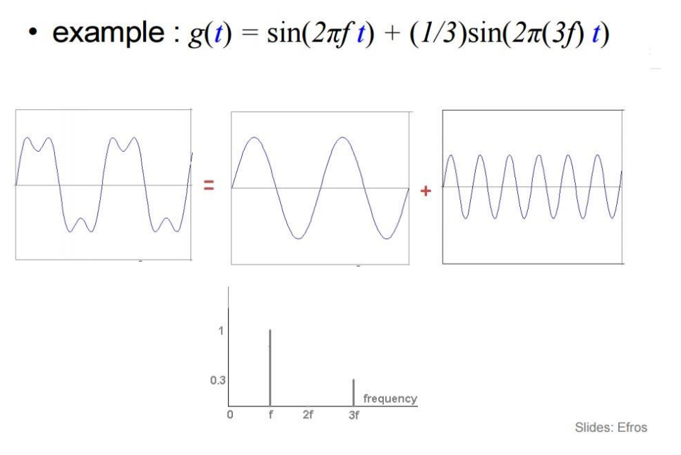
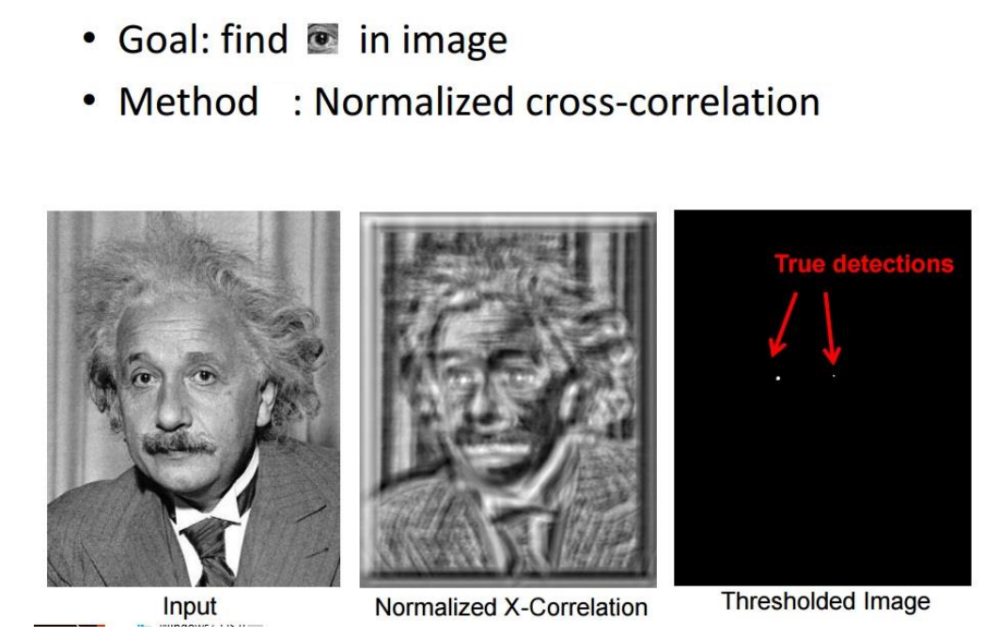
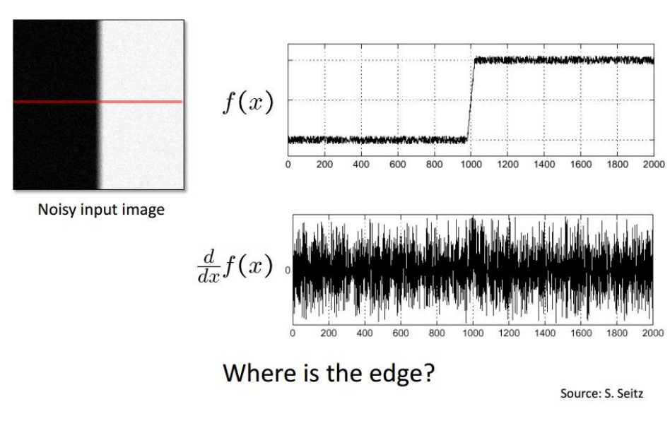

Image Fourier Analysis
Contents
Image Fourier Analysis¶
We use sine waves to perform image fourier analysis because any signal can be decomposed as a linear summation of sine waves with different amplitudes and time periods.
1D sine wave decomposition |
sine wave decomposition |
|---|---|
|
 |

Fig. 53 Fourier analysis for filters¶
Before performing the fourier analysis, images are subsampled. This is done to overcome the calculation head.

Fig. 54 Pipeline¶


Image Smoothing - Gaussian Kernel¶
Fig. 56 Gaussian Kernel¶

Fig. 57 Image smoothing¶

Fig. 58 Low-pass Filter¶


Template Matching¶
We have the candidates for correspondence from the left image and the right image. How do we match the corresponding regions of the both images.
Template matching is one way to perform this correspondence check.
Ways to perform template matching:
Correlation
Zero-mean correlation
Sum Square Difference
Normalized Cross Correlation
SSD |
NCC |
|---|---|
|
 |

Fig. 60 Normalized Cross Correlation¶
SSD with dark patch |
NCC with dark patch |
|---|---|
|

SSD v/s NCC¶
SSD is faster, but sensitive to overall intensity
NCC is slower, but invariant to local average intensity and contrast.
Note
NCC captures the cosine of angle between the vectors. NCC is similar to cosine similarity with normalization.
Image pyramids¶
Image pyramid is formed by applying gaussian filter on an image and then sampling every other pixel in the image.
Image Pyramid |
Image Pyramid |
|---|---|
|
|


The extra image samples added to the image contribute to 1/3 of the original image.
The essence of gaussian smoothing¶
Before Smoothing |
After Smoothing |
The contour |
|---|---|---|
|
|
|


See also
More information about Gaussian kernels can be found here
Gaussian Pyramids and Laplacian Pyramids
Fig. 61 Laplacian Pyramid¶
Finding edges using intensity values¶

Fig. 62 Edge detection in the 1D frequency domain.¶
The above figure is for the 1D case. An image is 2D, how to represent the edges in terms of gradients?
Edges as gradients |
Edges as gradients |
|---|---|
|

\(\theta\) represents the direction of the edge.
Edges for noisy input |
Edges for noisy input |
|---|---|
 |
|